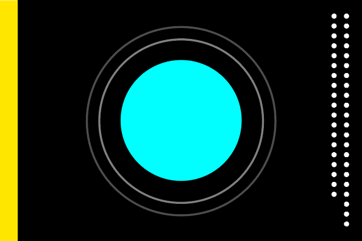
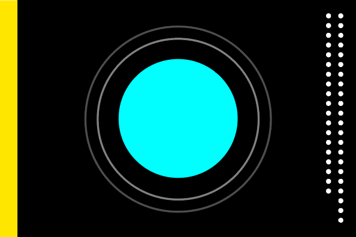

Kardashev scale
The Kardashev scale is a method of measuring a civilization's level of technological advancement based on the amount of energy they are able to use.
In 1964, Soviet astronomer Nikolai Kardashev defined three levels of civilizations, based on the order of magnitude of power available to them.
The scale has three designated categories:
Type I civilization / Planetary civilization
can use and store all of the energy which reaches its planet from its parent star.
Type II civilization / Stellar civilization
can harness the total energy of its planet's parent star.
Type III civilization / Galactic civilization
can control energy on the scale of its entire host galaxy.
Together as humans we're facing climate change, wars, pollution, economic inequality, hate crimes,
violation of civil
rights, government distrust, natural resource depletion and more of horrendous issues that need to be
resolved in order
to reach the next state of human civilization.
Humans are currently at Type 0 civilization.
"These civilizations can effectively control the entire resources of their planet; they can predict weather patterns and earthquakes very accurately, and even control them using artificially induced greenhouse effects or space-based lasers. A Type 1 Civilization could conceivably halt an ice-age."
Flag of Earth
The symbol derives from abstraction. It's not culturally biased and allows iteration as we progress. The Earth's flag is a part of our solar system flags. By accepting the symbol, we are accepting (current) values (compassion, love, peace, knowledge, truth, responsibility/service, honour and progress) in order to reach Planetary civilization. This, of course, is a suggestion.
Flags of Planets
 

Design logic from the Flag of Earth stays the same and can be applied on all planet's flags from our Solar system. The distance from the Sun and the number of the moons of course changes. The design is still in progress.
Example: Saturn has 53 moons. None of them should be excluded, so they are presented equally.
The flag's designs can change in relation to new discoveries.
Example: New moon is discovered.
Criticism
Having so many flags offers a potential scenario for dividing us once more. Evolving into Type II civilization would be reasonable as one solar system and not as one of the planets.
Stellar Civilization
"Orbiting Earth in the spaceship, I saw how beautiful our planet is. People, let us preserve and increase this beauty, not destroy it!"
Type II civilization flag
Symbols and flags are designed in order to unify common grounds and bring peace to the Planet. Solar flag would become a parent symbol to remind us that even living on other planets - we are united as one.
History
Planetary civilization flag was designed by Miha Artnak & Srđan Prodanović at Studio Ljudje in January, 2013. Miha continued with the research and designed it into a system.
While working on a design project a question sparked our imagination. What would our planet's flag look like? We didn't do any research, we just separately drew what we thought was the logical visual representation. We immediately noticed that we had an identical solution. Only this drove us into research.
We found out there were few attempts already put to practice. The logic of our predecessors was the same. Earth as a planet in our solar system. We even found almost exact design being made in 1979 by James W. Cadle (USA). This proved we were on a right path. Having the same ideas and opinions about the visual representation of our homeland in a different time and place brought us closer also culturally.
Other proposals that were made through history
Download the flags
This being an open source project all the source files (pdf) are availabile for use.
Terms of agreement
Ideas spread under the flags are just opinions. Trolling, hate speech, bullshit, dumb stuff and manipulation should not sabotage the faith in humanity or destroy the symbol. The symbol is our mirror. We are culturally, mentally and politically diverse and most of the time just don't agree. This time we need to step together as one and start rewriting our future.
Click on the flag to begin download
Buy the flags and support the artists
We are currently only printing and shipping Earth flags, but if you would like other (e.g. Mars) please leave your email below - if there is enough interest we'll notify you.
Flag of Earth
Material: Poliester
Size: 150x100 cm, 59x39 inch
Can be used outside: Yes
Shipping: FREE worldwide!